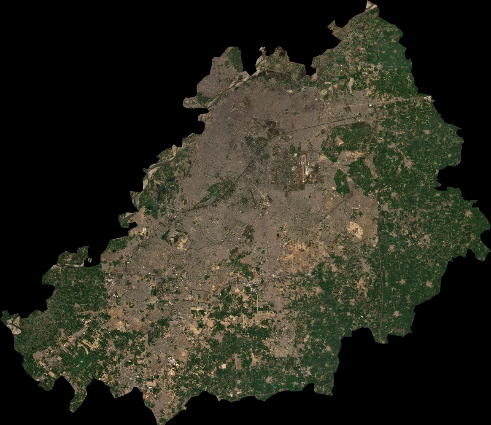

Deep learning · Remote sensing · Explainable AI
Accuracy vs. efficiency in land-cover classification, from EuroSAT to Lahore
A custom CNN and a transfer-learned ResNet50 were trained on 27,000 Sentinel-2 images, profiled for computational cost, explained with Grad-CAM, and deployed over the Lahore district of Pakistan.
Transfer learning wins on accuracy. ResNet50 reaches 97.41% test accuracy against 81.38% for the CNN trained from scratch, and macro F1 rises from 0.805 to 0.973.
…at a real compute cost. 4.13 vs. 0.16 GMACs per image, 5.1× the parameters, and 8.3× the latency (14.9 vs. 1.8 ms on a Quadro P2000).
Hard classes become easy. Highway was the CNN's weakest class (F1 0.59). ResNet50 scores it at 0.99, and every one of its classes is at or above 0.957.
District-scale deployment. Both models mapped every 640 m tile of Lahore. The maps show the dense urban core, but the models' disagreement reveals domain shift.
Study area & methodology
The benchmark is EuroSAT, 64 × 64 px Sentinel-2 tiles from 34 European countries. The deployment target is Lahore district, Punjab, Pakistan, a rapidly urbanising semi-arid region.
At a glance
- Benchmark
- EuroSAT RGB · 27,000 images · 10 classes
- Split
- 70 / 15 / 15 → 18,900 / 4,050 / 4,050 (seed 42)
- Deployment
- Lahore district, ≈ 1,760 km²
- Imagery
- Sentinel-2 L2A median composite, B4-B3-B2, 10 m
- Period
- Jan – Mar 2026, < 10% cloud, QA60 masked
- Raster
- 5,405 × 6,221 px → 84 × 97 tiles of 64 px
- Platform
- Google Earth Engine · PyTorch · Quadro P2000 (4 GB)
Results summary
Both models evaluated on the same 4,050-image held-out test split.
Training dynamics
Accuracy
Cross-entropy loss
Classification performance
Row-normalised confusion matrices on the test split. The CNN confuses visually similar vegetation classes and roads. ResNet50 resolves almost all of these confusions.
Per-class precision, recall & F1
F1 by class
Confusion matrix
Computational cost
Measured with thop and CUDA-synchronised timing at batch size 1 on an NVIDIA Quadro P2000.
Explainability with Grad-CAM
Heatmaps show which regions drive ResNet50's decision. They follow road edges for Highway, river channels for River, and repeated building texture for Residential.
Grad-CAM heatmaps (ResNet50)
layer4[-1] for 20 EuroSAT images with true and predicted labels.38 images drawn strictly from the held-out test split, including 8 ResNet50 errors.
Case study: Lahore district
The trained models were applied to every 64 × 64 px tile (640 m × 640 m) of the Sentinel-2 composite.
Maps & statistics

Tile share by class
Hover a tile to compare both models, or click a class to isolate it.
Try the model yourself
Both trained models run directly in your browser through ONNX Runtime Web. Pick a test image or upload your own satellite tile. Nothing is uploaded to a server.
Center-cropped and resized to a 64 × 64 px tile (≈ 640 m at 10 m/px)
Select an image to run the models.
Limitations & next steps
Limitations
- RGB only. The other 10 Sentinel-2 spectral bands are not used.
- The CNN trained for only 10 epochs and was still improving, so part of the gap is training budget.
- Lahore has no ground truth yet, and 640 m tiles mix several land-cover types.
- European training scenes vs. a South Asian winter composite introduce domain shift.
Next steps
- Validate the Lahore maps against ESA WorldCover and Dynamic World.
- Fine-tune on a small set of labelled Lahore tiles to close the domain gap.
- Add multispectral input (13 bands) and lighter backbones such as MobileNet and EfficientNet.
- Multi-year composites for land-cover change detection.